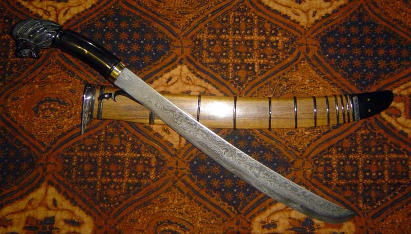
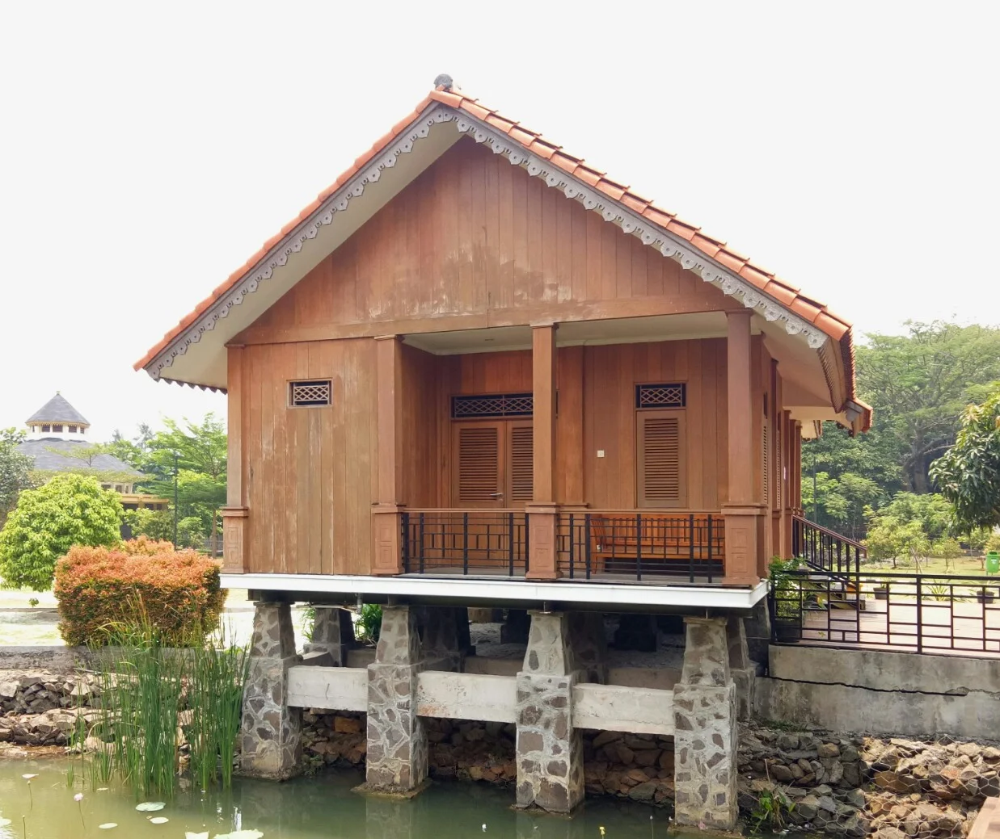

Senjata dan Rumah Adat
Golok
Golok adalah pisau besar terbuat dari besi atau baja yang digunakan untuk membelah atau memotong. Golok kerap digunakan sebagai alat berkebun oleh masyarakat Indonesia. Hingga saat ini golok masih umum digunakan sebagai senjata dalam seni bela diri silat.
Ukuran, berat, dan bentuknya bervariasi tergantung dari pandai besi yang membuatnya. Golok memiliki bentuk yang hampir serupa dengan machete tetapi golok cenderung lebih pendek dan lebih berat, dan sering digunakan untuk memotong semak dan dahan pohon. Golok biasanya dibuat dari besi baja karbon yang lebih lunak daripada pisau besar lainnya di dunia. Ini membuatnya mudah untuk diasah tetapi membutuhkan pengasahan yang lebih sering.
Rumah Kebaya
Rumah kebaya adalah sebuah nama rumah adat suku Betawi. Disebut dengan rumah kebaya dikarenakan bentuk atapnya yang menyerupai pelana yang dilipat dan apabila dilihat dari samping maka lipatan-lipatan tersebut terlihat seperti lipatan kebaya. Ciri khas dari rumah ini adalah rumah ini memiliki teras yang luas yang berguna untuk menjamu tamu dan menjadi tempat bersantai keluarga. Pada zaman dahulu, masyarakat betawi membuat sumur di depan rumahnya dan pemakaman yang berada disamping rumah. Dan, dinding rumahnya terbuat dari panel-panel yang dapat dibuka dan digeser-geser ke tepinya. Hal ini dimaksudkan agar rumah terasa lebih luas.
Rumah ini dapat dibedakan menjadi 2 bagian dari segi sifatnya, yakni bagian depan bersifat semi publik, sehingga setiap orang dapat melihat betapa asri dan sejuknya rumah tersebut. Dan yang kedua adalah bagian belakang yang bersifat pribadi. Bagian ini hanya boleh dilihat oleh orang-orang dekat dari pihak pemilik rumah.